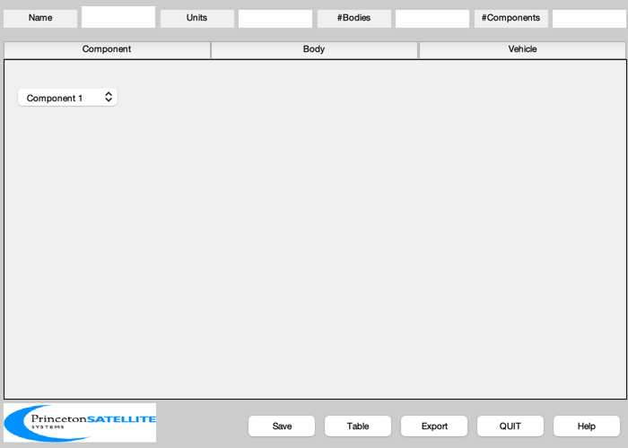
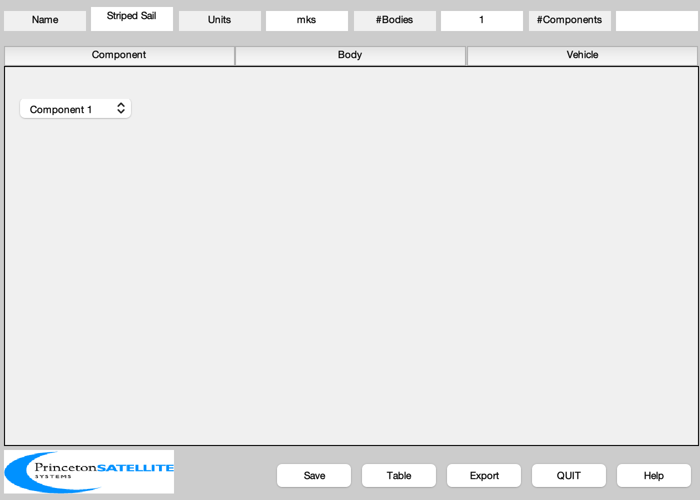
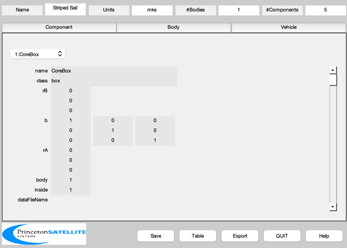
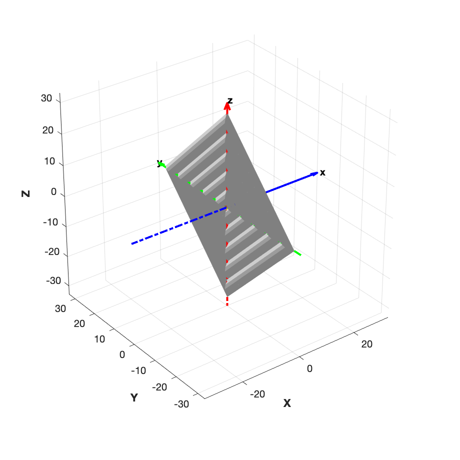

Design a square sail with four striped quadrants. Uses CP1.
The sail has a simple core box. Each quadrant is its own component. Actuators are not modeled. Uses CP1 properties. The sail front is +X in the body frame.
Since version 7. ------------------------------------------------------------------------ See also: StripedQuadrant CP1Props, BuildCADModel, CreateBody, CreateComponent, DrawSCPlanPlugIn, VFToMassStructure, Eul2Mat, FindDirectory, SaveStructure, AddAxes ------------------------------------------------------------------------
Contents
%-------------------------------------------------------------------------- % Copyright (c) 2006 Princeton Satellite Systems, Inc. All rights reserved. % Comprehensive Solar Sail Simulation SBIR #NNM06AA38C %--------------------------------------------------------------------------
Properties
%-----------
arealMass = 0.004;
massBus = 100;
lQuad = 30;
[optical, infrared, thermal] = CP1Props;
Initialize
%----------- BuildCADModel( 'initialize' );
Add general properties
%----------------------- BuildCADModel( 'set name' , 'Striped Sail' ); BuildCADModel( 'set units', 'mks' ); %------------------------------------------------------------------

Create CAD bodies first
%------------------------------------------------------------------
Core
%----- m = CreateBody( 'make', 'name', 'Core' ); BuildCADModel('add body', m );
This creates the connections between the bodies
%------------------------------------------------ BuildCADModel( 'compute paths' ); %------------------------------------------------------------------
Create CAD Components second
%------------------------------------------------------------------
Core
%----- m = CreateComponent( 'make', 'box','x',1, 'y', 1, 'z', 1,'name','CoreBox','body',1,... 'mass', massBus, 'faceColor', 'gold foil', 'inside', 1 ); BuildCADModel( 'add component', m );
Sail
%-----
Get quadrant vertices, in X/Y plane
%------------------------------------
[v,f] = StripedQuadrant( lQuad, 5, 0.2, 4 );
massQuad = VFToMassStructure( v, f );
Multiple by areal mass
%-----------------------
massQuad.mass = massQuad.mass*arealMass;
massQuad.inertia = massQuad.inertia*arealMass;
Create components by rotating quadrant
%--------------------------------------- thetaX = [0 pi/2 pi 3*pi/2]; for k = 1:4 b = Eul2Mat([thetaX(k);0;0])*Eul2Mat([0;-pi/2;0]); m = CreateComponent( 'make', 'sail','name',['Quadrant' num2str(k)],'body',1,... 'mass', massQuad, 'faceColor', 'mirror','rA',[0;0;0],'b',b,... 'sigmaS', optical.sigmaS, 'sigmaD', optical.sigmaD, 'sigmaA', optical.sigmaA,... 'emissivity', thermal.emissivity,... 'sigmaRS',infrared.sigmaRS,'sigmaRD',infrared.sigmaRD,'sigmaRA',infrared.sigmaRA,... 'vertex',v ,'face', f, 'inside', 0 ); BuildCADModel( 'add component', m ); end %------------------------------------------------------------------
Export
%------------------------------------------------------------------ g = BuildCADModel( 'get cad model' ); c = cd; cd(FindDirectory('SailData')); SaveStructure( g, 'StripedSail' ); cd(c);
Draw 3D view
%------------- DrawSCPlanPlugIn('initialize',g); AddAxes(1.1*lQuad,[],[],gcf) %-------------------------------------- % PSS internal file version information %--------------------------------------
ans =
Figure (2: 3D Vehicle Plan) with properties:
Number: 2
Name: '3D Vehicle Plan'
Color: [1 1 1]
Position: [500 470 460 460]
Units: 'pixels'
Use GET to show all properties
